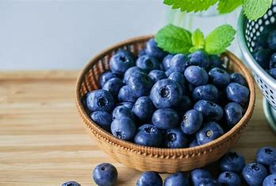

ブルーベリーの健康効果 
ブルーベリーの健康効果の紹介します。
①目の疲れに効くアントシアニン
ブルーベリーは、ポリフェノールのひとつであるアントシアニンが豊富。抗酸化作用が強く動脈硬化の進行を抑えて生活習慣病の予防に役立つ。またアントシアニンは、目の働きを活性化する作用を持つとも言われており、目の疲れや視力低下の予防にも効果が期待できます。
②冷凍ブルーベリーは体に良くない？
冷凍ブルーベリーはマイナス20度で急速冷凍するため、栄養素の変化は少ないです。ビタミンCは水に溶けやすい栄養素であるため、少しでも温度が上がると溶けた水分に流れ出て損失しますがそれを防ぐこともできます。
ブルーベリーは、ポリフェノールのひとつであるアントシアニンが豊富。抗酸化作用が強く動脈硬化の進行を抑えて生活習慣病の予防に役立つ。またアントシアニンは、目の働きを活性化する作用を持つとも言われており、目の疲れや視力低下の予防にも効果が期待できます。
②冷凍ブルーベリーは体に良くない？
冷凍ブルーベリーはマイナス20度で急速冷凍するため、栄養素の変化は少ないです。ビタミンCは水に溶けやすい栄養素であるため、少しでも温度が上がると溶けた水分に流れ出て損失しますがそれを防ぐこともできます。